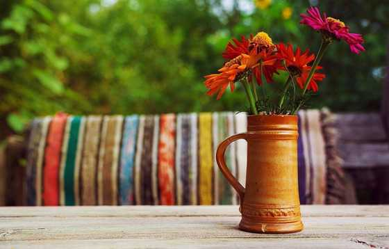

ABOUT
お店の由来・想い
お店があるのは、松戸市紙敷の住宅地の奥。緑に囲まれた、小さな花屋さんです。店名の「ともちゃん家(ち)」という親しみやすい呼びかけどおり、店主の人柄とセンスが感じられる、居心地のよいお店として紹介されています。
予算やイメージを伝えると、花束・鉢物・リースなどを作ってもらえます。お花のほか、店主がセレクトした雑貨も並びます。また、時々、音楽のイベントや手作り作家さんが集まるフリマ、お庭イベント、ワークショップも不定期に開かれています。
ご注文はInstagramのメッセージから、予約制とのことです。
※上記は公開されている紹介情報(ちばトク!、Instagramプロフィール等)をもとにまとめています。店名の由来そのものは確認できていません。

VOICE
口コミ
イメージ例
住宅地の奥なのに、着くとほっとする緑のお店。予算を伝えたら、思い描いていた雰囲気の花束にしてもらえそうです。
イメージ例
雑貨を眺めながらお花を選べる、友だちの家のような空気がいい。ついゆっくりしてしまいそう。
イメージ例
庭でのイベントがあると聞いて、家族で出かけてみたいと思いました。季節の花も楽しみです。
※制作側が作成したイメージ例で、実在のお客様の声ではありません。
ACCESS
アクセス
| 住所 | 千葉県松戸市紙敷1073-2 |
|---|---|
| 最寄り | 東松戸駅から徒歩約10分(紹介情報による) |
| 駐車場 | あり(紹介情報による) |
| 営業時間 | 準備中(不定期・Instagramで案内とのこと) |
| 電話 | 準備中 |
| @tomochanchi_ohana |